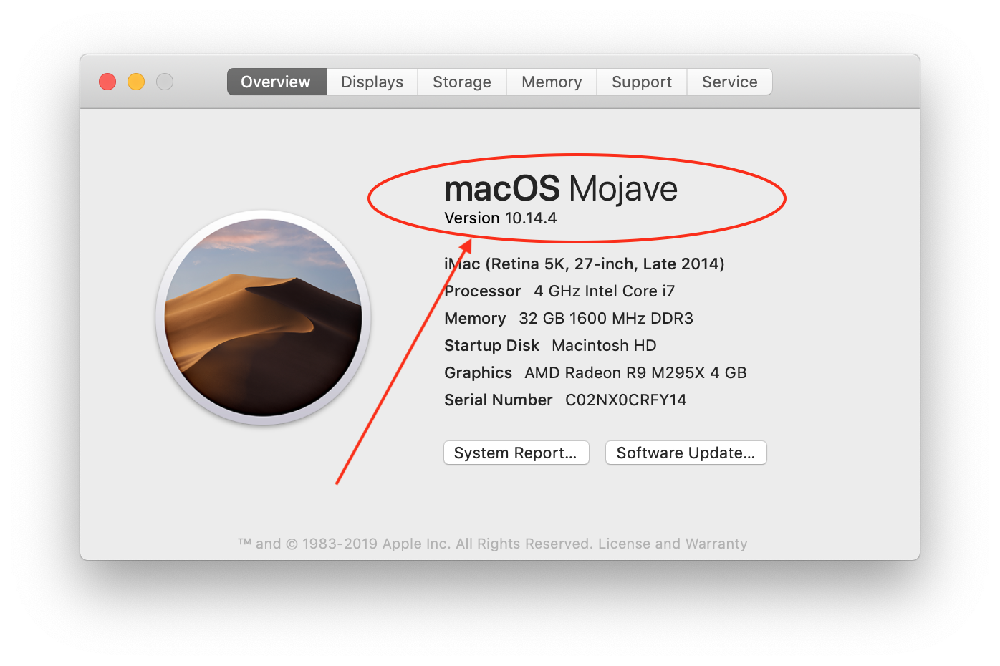

Apple Computer⌁
Apple regularly updates their iPhone software (iOS), computer software (macOS) and Xcode application. Loop's developers work hard to update Loop code as the new Apple updates are pushed out.
Do not install beta releases of Xcode, iOS or macOS on devices running or building Loop.
The most recent version of iOS is 12.2
The most recent version of macOS is 10.14.4
The most recent version of Xcode is 10.12.1
The most recent version of Loop is 1.9.5
The most recent version of watchOS is 5.2
The way Apple updates happen is that one equipment's update will tend to require updating other pieces of Apple equipment. For example, if you update your iOS on the iPhone, you may need an updated version of Xcode to install a new Loop app onto your phone. And the new Xcode will require the developers of Loop to make updates to the Loop source code. Finally, new Xcode updates also frequently require macOS updates on your computer.
When can you use Xcode 10.1 and macOS 10.13.6?⌁
These versions are being phased out because Apple has moved onto newer versions. For now, if you can't upgrade your Apple computer to Mojave (and are stuck at macOS 10.13.6), you can still build so long as you:
- Use Loop master branch (so you will not be able to use Omnipod Loop or Loop dev branches), and
- Have not updated your iPhone to iOS 12.2
If you want to use Omnipod-testing or Loop-dev branches, you will have to use Mojave macOS and Xcode 10.2. If you updated your iPhone to iOS 12.2, you will also have to use Mojave macOS and Xcode 10.2 at a minimum.
Omnipod and dev users⌁
In order to build Omnipod Loop, you will be required to use macOS 10.14.3 (Mojave) and Xcode 10.2 at a minimum. The version of Loop that supports Omnipod and Loop's dev branch both require the updated versions of macOS and Xcode.
Computer access⌁
Computer access is only required when you are initially installing the Loop app, updating to a newer release, or making changes to the underlying Loop code. You do NOT need access to an Apple computer in order to troubleshoot or change Loop settings, such as basal profiles or carb ratios.
Finding your macOS version⌁
Where can you find your computer’s macOS version? Click on the Apple icon in the upper left corner of your Mac’s display. Select “About This Mac” from the dropdown menu, and it will display the macOS version number.

If your computer is running an out-of-date macOS, you can read whether you can upgrade to the latest macOS version here. The degree to which you can upgrade an older Apple computer will depend on the age and model of the computer. The minimum age of various Apple computers to run Mojave is shown below: